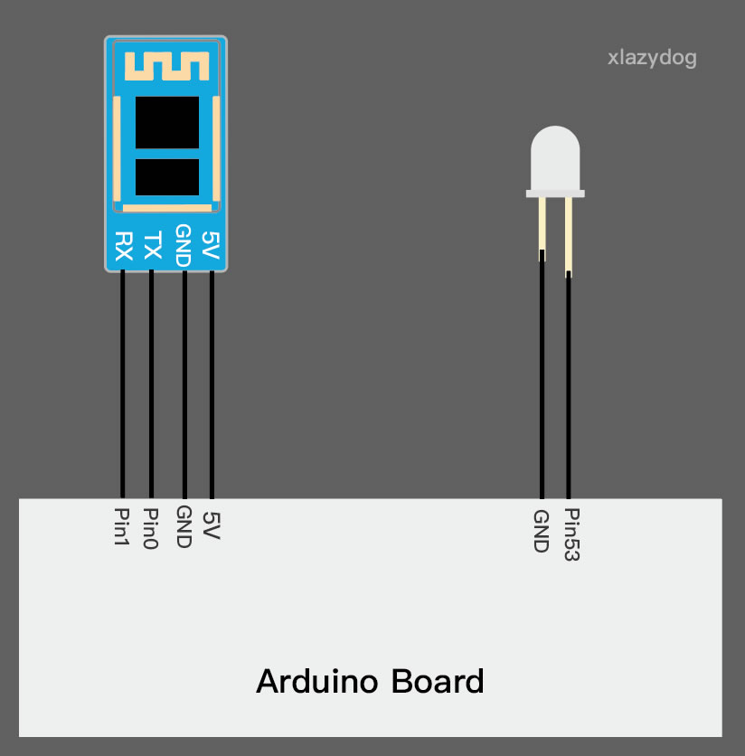
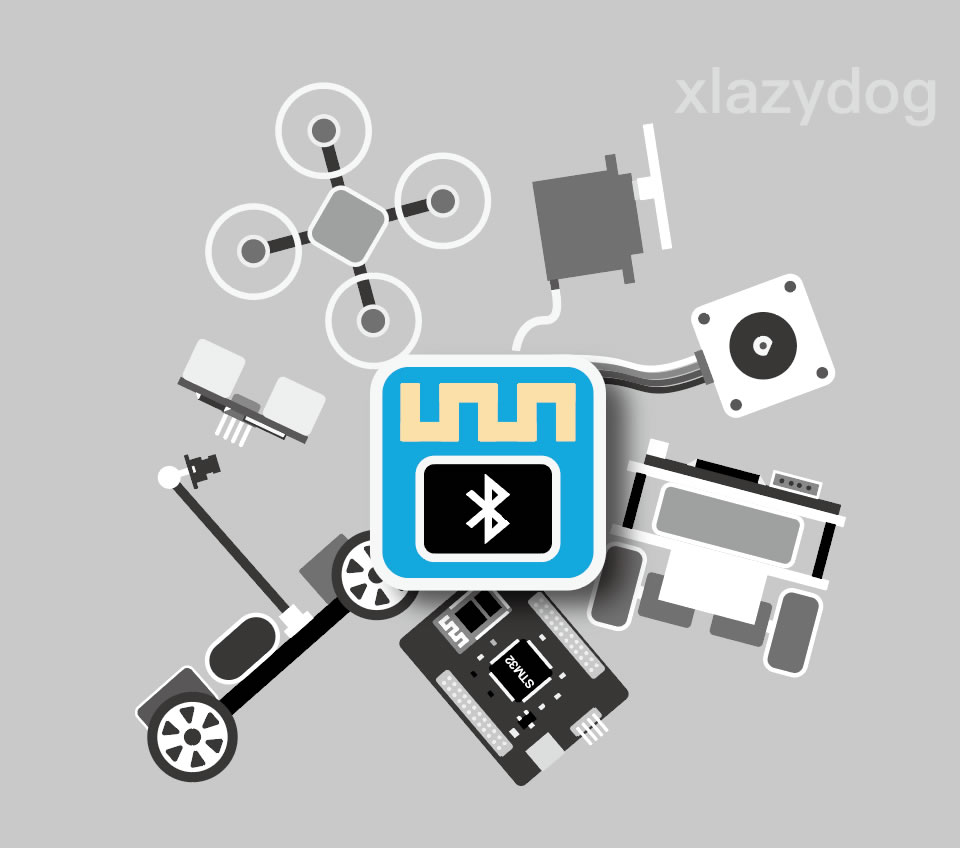
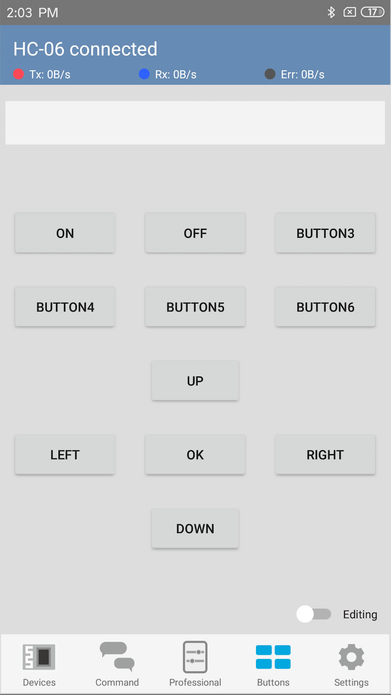
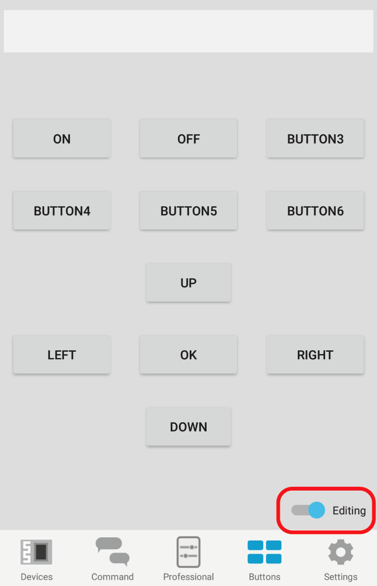
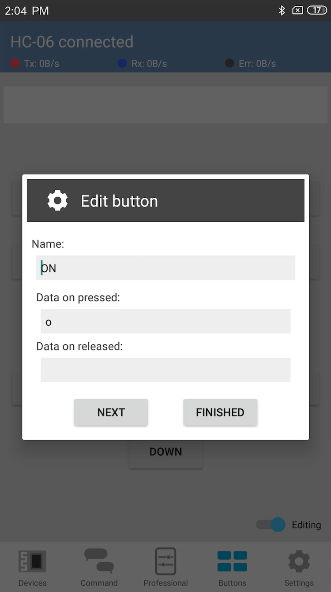
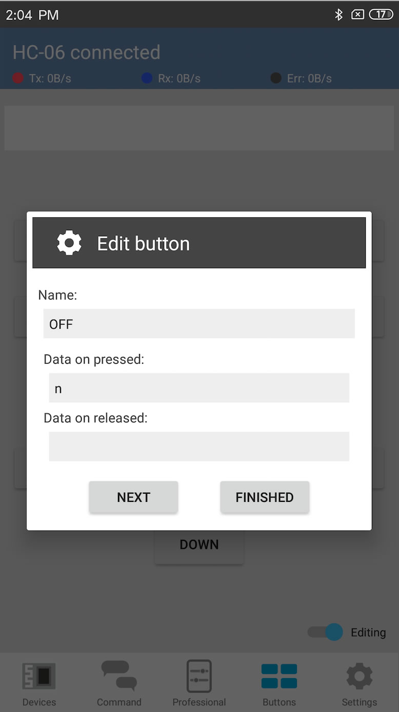
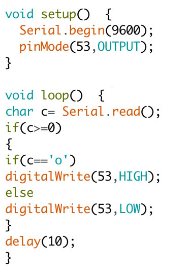
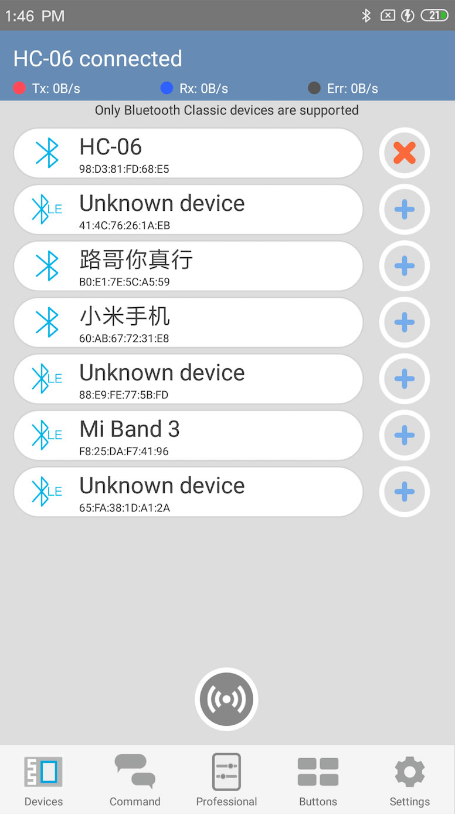

Get BTMCU in google play storeThe BTMCU support Button Control,it has 11 customizable buttons.
 Click the editing switch,then press the button to customize buttons
By clicking the button in editing mode, you can get the dialog to edit them.You can edit the name and data of each button.One thing to note is that. Each time the button is pressed, two events, 'Press' and 'Release’ are triggered. You can edit the corresponding data separately.
At this time,I used two buttons to control the light.When button 'ON' pressed, character 'o' will be transmitted to arduino,while 'n' ,or other characters for 'OFF'
Now it's time to program the Arduino
The code is very simple,you don't even need the src file
The devices page
The figure above shows that the Bluetooth device HC-06 is connected.To connect a device, the correct way to do this is to click the "+" sign on the right side of the device.When the device is successfully connected, the "+" flag will change to the "X" mark.
All the work is done, now you can switch the LED on the button page. Hope you have fun !!!